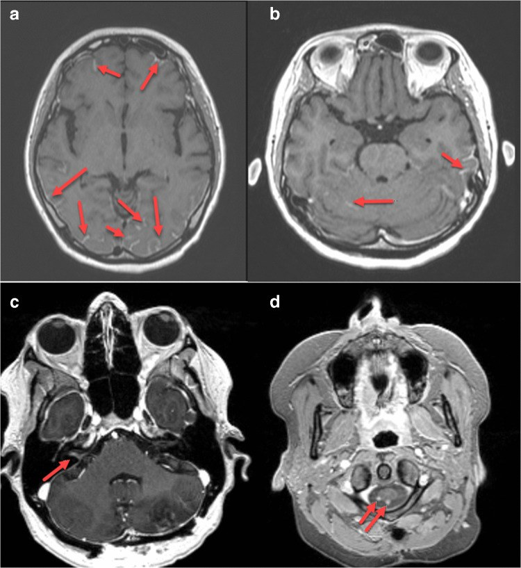
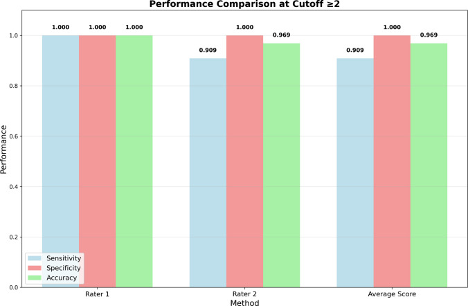
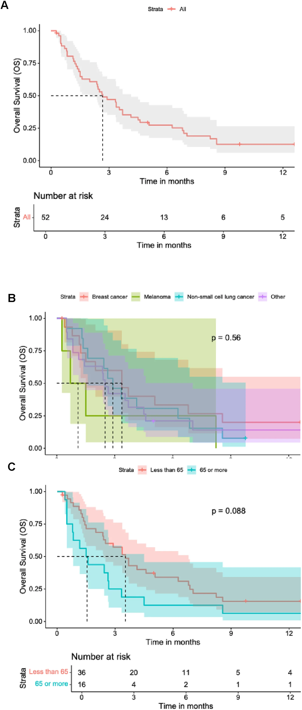

1677 — RANO-LM: đánh giá đáp ứng di căn màng não trên MRI + dịch não tủy
Tags: pattern:di-can-mang-nao pattern:ngam-mang-nao vung:nao vung:tuy-song protocol:MRI-so-co-gadolinium protocol:choc-do-tuy-song score:RANO-LM
Mức chắc chắn (certainty): tổng hợp y văn — tiêu chuẩn RANO-LM/NANO-LM là đồng thuận chuyên gia, chưa có thử nghiệm xác nhận tiên lượng; số liệu đáp ứng lấy từ các nghiên cứu pha I/II riêng lẻ.
1. Tổng quan — vì sao "đáp ứng" ở màng não không thể đo bằng RECIST
Bệnh học: di căn màng não (leptomeningeal metastasis, LM) lan trong khoang dịch não tủy — một ngăn riêng sau hàng rào máu–não. Thuốc có thể đạt nồng độ tốt trong máu mà không đủ trong DNT; ngược lại, đáp ứng trong DNT có thể không đi kèm đáp ứng ngoài sọ.
Hệ quả về đo lường:
- RECIST không dùng được: tổn thương màng não là mờ/ngấm theo đường viền, không có "đường kính lớn nhất" rõ ràng; nhiều ổ không đo được trên mặt phẳng.
- MRI và DNT có thể lệch nhau: một bên cải thiện, bên kia xấu đi — vì vậy RANO-LM đề xuất đánh giá tổng hợp 3 thành phần: khám thần kinh chuẩn hóa (NANO-LM), tế bào học DNT, và bảng điểm MRI.
- Thời điểm: MRI định kỳ 2–3 tháng ở bệnh nhân có di căn não (hướng dẫn hiện hành); LM thường theo dõi sát hơn khi đổi điều trị.
TẠI SAO phải chuẩn hóa: nếu mỗi thầy đọc một kiểu, "đáp ứng 50%" trong nghiên cứu không so được với thực hành. NANO-LM ra đời để giảm bất đồng giữa người đánh giá, gồm 14 lĩnh vực, mỗi lĩnh vực 0–2 điểm, kèm ghi nhận steroid, giảm đau, chống nôn và di chứng cũ lúc nền (PMC11812256).
2. Mẫu hình trên MRI & phân loại DNT
Bốn kiểu hình màng não cần mô tả riêng (đừng gộp):
- Ngấm màng não – màng nhện dạng đường (linear): mờ theo rãnh, bề mặt não, dây thần kinh sọ.
- Dạng nốt (nodular): nốt ngấm rời, có thể ở rãnh, bề mặt tiểu não, rễ thần kinh.
- Thể não – tủy: nốt trong ống sống, dày rễ đuôi ngựa, ngấm màng tủy.
- Giãn não thất do tắc hấp thu — thường là dấu hiệu nặng lên, không phải "biến chứng riêng".
Phân độ MRI-LMD (đề xuất 2026): thang grade 1–6 dựa trên kiểu ngấm màng não, kèm Evans index (giãn não thất), đặc điểm di căn não và tổn thương tủy. Hai bác sĩ độc lập: ICC = 0,953; ngưỡng ≥ 2 điểm cho hiệu năng chẩn đoán tốt (PMC13323362).
| Grade | Nhóm nguy cơ | Tử vong trong nghiên cứu |
|---|---|---|
| 1–2 | Thấp | 8,6% |
| 3–4 | Trung bình | 50% |
| ≥ 5 | Cao | 80,0% (p = 0,00011) |
DNT — 3 mức: dương tính (có tế bào ác), không xác định (nghi ngờ/tế bào không điển hình), âm tính. Kỹ thuật quyết định độ nhạy:
- Lấy ≥ 10 mL (tối thiểu 5 mL), xử lý trong 30 phút, tránh lẫn máu.
- Nếu lần đầu âm: chọc lại trong điều kiện tối ưu — độ nhạy tăng từ ~50–60% lên ~80% (PMC13360412).
- Chọc đồng thời não thất + thắt lưng: bất đồng 32%; âm tính giả 17% (thắt lưng) và 20% (não thất) — bệnh ở bể nền có thể không thấy trên DNT thắt lưng.

3. Ma trận đối chiếu 3 thành phần đáp ứng
| Thành phần | Đo cái gì | Chốt vào (gợi ý đáp ứng) | Chốt loại (gợi ý tiến triển) | Cạm bẫy |
|---|---|---|---|---|
| MRI (bảng điểm RANO-LM) | Ngấm màng não dạng đường/nốt, nốt trong ống sống, giãn não thất | Giảm ≥ 1 bậc hoặc mất nốt; không ổ mới; não thất không tăng | Ổ mới, nốt to lên, ngấm lan rộng, não thất tăng | Giả tiến triển sau xạ/immunotherapy; ngấm do viêm màng não – tăng áp lực nội sọ |
| DNT | Tế bào học, tế bào, protein, glucose, cfDNA | Chuyển dương → âm ở ≥ 2 lần liên tiếp | Dương tính dai dẳng hoặc tế bào tăng | Âm tính giả 17–20%; lẫn máu; 1 lần âm không loại trừ |
| Khám thần kinh (NANO-LM) | 14 lĩnh vực, 0–2 điểm + steroid/giảm đau | Điểm giảm, chức năng cải thiện | Điểm tăng, xuất hiện dấu hiệu mới | Steroid che triệu chứng; di chứng cũ lúc nền không trừ được |
| Ngoài sọ (RECIST) | Tổn thương ngoài TKTW | Theo RECIST | Theo RECIST | Đáp ứng trong/ngoài sọ thường lệch nhau — không dùng cái này để suy cái kia |
Định nghĩa tổng hợp (theo khung RANO):
- Đáp ứng hoàn toàn (CR): MRI không còn bệnh, DNT âm, thần kinh ổn định/ cải thiện, không dùng steroid tăng liều.
- Đáp ứng một phần (PR): cải thiện có ý nghĩa ở ≥ 1 thành phần, không xấu đi ở thành phần khác, không ổ mới.
- Bệnh ổn định (SD): không đạt CR/PR, không đạt PD.
- Tiến triển (PD): ổ mới, tăng rõ trên MRI, DNT dương dai dẳng kèm xấu thần kinh, hoặc xuất hiện biến chứng (giãn não thất tăng, liệt chi mới).
- CR/PR nên xác nhận lại ≥ 4 tuần nếu là tiêu chí chính của nghiên cứu (theo khung RANO-BM).

4. Protocol & ngưỡng
Quy trình đánh giá 1 chu kỳ:
- MRI sọ + toàn bộ tủy (T1 sau gadolinium, mặt phẳng 3 chiều; FLAIR; DWI khi cần) — cùng máy, cùng độ dày lát giữa các lần để so sánh.
- Chấm điểm MRI-LMD (grade 1–6) + mô tả riêng: linear/nodular, não thất (Evans), tủy.
- DNT: thể tích, tế bào học, sinh hóa, cfDNA nếu có; lặp lại nếu lần đầu âm mà nghi ngờ cao.
- NANO-LM: 14 mục 0–2, ghi rõ steroid/giảm đau/chống nôn.
- Phân loại CR/PR/SD/PD theo tổng hợp; ghi rõ thành phần nào quyết định.
- Lịch: MRI 2–3 tháng/lần khi ổn định; sớm hơn nếu xấu thần kinh.
Số liệu tham chiếu về đáp ứng (để hiểu vì sao cần chuẩn hóa):
| Nghiên cứu | Thuốc | Đáp ứng theo RANO-LM |
|---|---|---|
| BLOOM (pha I, 41 ca) | osimertinib 160 mg | ORR 62%, DoR 15,2 tháng, PFS 8,6, OS 11,0 tháng |
| Ahn 2020 (22 ca) | osimertinib 80 mg | ORR 55%, DCR 91%, PFS 11,1, OS 18,8 tháng |
| Park 2020 (40 ca) | osimertinib 160 mg | DCR 92,5% (CR 12,5%) |
→ Cùng bệnh, cùng tiêu chí, nhưng ORR 55–62% — nếu không chuẩn hóa thì không so được.
flowchart TD
A[LM đang điều trị] --> B[MRI sọ + tủy + chấm grade]
B --> C[DNT: tế bào học, sinh hóa, cfDNA]
C --> D[NANO-LM 14 mục]
D --> E{Thành phần nào xấu đi?}
E -- Không thành phần nào --> F{Đạt CR/PR?}
F -- Có --> G[CR/PR - xác nhận >= 4 tuần]
F -- Không --> H[SD - theo dõi 2-3 tháng]
E -- Ổ mới / nốt to / DNT dương dai dẳng --> I{Giả tiến triển?}
I -- Nghi do xạ/ICI --> J[Theo dõi sát 4-8 tuần + MRI lặp]
I -- Không --> K[PD - đổi điều trị]
J --> K
5. Biến thể & cạm bẫy
- Giả tiến triển (pseudoprogression): sau xạ hoặc ức chế miễn dịch, màng não có thể ngấm mạnh hơn do viêm; đừng gọi PD ngay nếu bệnh nhân ổn định/ cải thiện lâm sàng — lặp MRI sau 4–8 tuần.
- Ngấm màng não do nguyên nhân khác: viêm màng não nhiễm khuẩn/vô khuẩn, tăng áp lực nội sọ, sau phẫu thuật, sau chọc dò — không phải LM; cần DNT và bối cảnh.
- Giãn não thất: tăng nhẹ có thể do thuốc/steroid, không luôn là tiến triển; nhưng giãn nhanh + đau đầu = PD/biến chứng.
- DNT âm một lần: không loại trừ (âm tính giả 17–20%, bất đồng 32% giữa não thất và thắt lưng). Nếu MRI nặng mà DNT âm → chọc lại hoặc lấy DNT não thất.
- Steroid: làm giảm ngấm màng não và giảm triệu chứng → có thể che đáp ứng/tiến triển; phải ghi liều steroid mỗi lần đánh giá.
- So sánh ảnh khác máy/khác độ dày lát: ngấm màng não rất nhạy với kỹ thuật; đổi protocol giữa 2 lần có thể tạo "đáp ứng" hoặc "tiến triển" giả.
- Đừng dùng RECIST ngoài sọ để suy đáp ứng trong sọ: hai ngăn có thể lệch hoàn toàn.

6. Tự lượng giá
Câu 1. Bệnh nhân LM đang osimertinib: MRI cải thiện, DNT vẫn dương, thần kinh ổn. Kết luận?
Đáp án
Không thể gọi CR — CR cần cả 3: MRI không bệnh, DNT âm, thần kinh ổn định. Đây là đáp ứng một phần/ổn định tổng hợp tùy mức cải thiện MRI; cần lặp DNT (thể tích ≥ 10 mL, xử lý ≤ 30 phút) vì âm tính giả/dương dai dẳng đều thường gặp.
Câu 2. MRI 6 tuần sau xạ toàn não: ngấm màng não tăng, bệnh nhân tỉnh táo hơn, không dấu hiệu mới. Xử trí?
Đáp án
Nghi giả tiến triển, không đổi điều trị ngay: lặp MRI sau 4–8 tuần, kèm đánh giá NANO-LM và DNT. Ngấm màng não tăng đơn thuần sau xạ/immunotherapy không đủ gọi PD khi lâm sàng cải thiện.
Câu 3. Vì sao phải chấm điểm NANO-LM thay vì chỉ ghi "triệu chứng giảm"?
Đáp án
Vì "giảm" không đo được giữa các lần/người đánh giá. NANO-LM chuẩn hóa 14 lĩnh vực, 0–2 điểm, kèm ghi nhận steroid/giảm đau/chống nôn và di chứng nền → giảm bất đồng, cho phép so sánh và phát hiện xấu đi ở một lĩnh vực mà cảm giác chung vẫn "ổn".
Bài liên quan chéo
- 1659 — Di căn màng não – nội tủy: nền tảng hình ảnh và sinh học của bệnh màng não.
- 1676 — Đặt bồn Ommaya và điều trị nội tủy: đường lấy dịch não tủy/điều trị nội tủy khi theo dõi RANO-LM.
- 1678 — Đau do xâm lấn đám rối thần kinh: biến chứng thần kinh khác của ung thư lan, dễ nhầm với LM.
Không dùng để chẩn đoán độc lập khi chưa có người hướng dẫn. RANO-LM/NANO-LM là đồng thuận đang hoàn thiện; số liệu đáp ứng từ các nghiên cứu riêng lẻ, không phải so sánh trực tiếp.